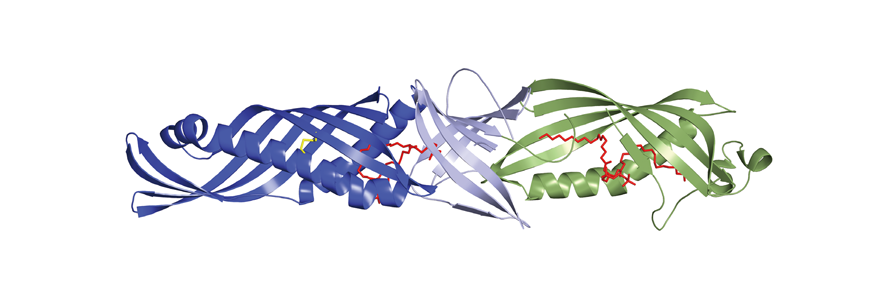

주제별 연구성과
주제별 연구성과
KAIST RESEARCH ACHIEVEMENTS
면역수용체LBP의 구조를 밝히다
화학과 이지오
요약
톨유사수용체(Toll-like Receptor, TLR)의 구조연구는 2000년 이후 매우 활발히 연구되어 왔다. 2005년에 최초의 TLR 구조가 발표된 이래 이십 여개의 TLR-리간드 입체구조에 대한 연구가 발표되었다. 이러한 연구를 통하여 감염성 미생물에서 유래된 분자가 어떠한 구조를 가지고 TLR에 결합하는지와 이러한 결합이 왜 면역반응을 일으키는지에 대한 상세한 분자 구조가 대체로 알려질 수 있었다. 앞으로 우리는 추가연구를 통하여 미생물 분자가 TLR에 결합하였을 때 일어나는 구조변화가 어떠한 과정을 거쳐서 세포내부에 있는 신호전달 단백질을 활성화 시키는지를 연구하고자 한다.
연구내용
LBP는 당지질에 대한 선천성 면역반응에서 핵심역할을 하는 면역수용체이다. 당지질(Lipolysccharide)은 그람 음성균의 세포표면에 존재하는 생체고분자 물질로 인간 세포에는 존재하지 않는다. 감염된 박테리아에서 떨어져 나오는 미량의 당지질은 세균감염의 초기 신호가 되어서 면역 시스템을 강력하게 활성화 시킨다. 당지질에 대한 적절한 면역반응은 세균감염에 대한 핵심적인 방어 기작이지만 지나친 면역반응은 치명적인 패혈증으로 진행될 수 있다. 당지질은 면역세포에 있는 LBP, CD14, TLR4, MD-2 네 가지 수용체에 의하여 인식이 된다.
지난 10년간 본 연구실은 CD14, TLR4, MD-2의 분자 입체구조를 차례로 규명하였다. 본 연구에서는 이중 유일하게 구조연구가 되지 않았던 LBP의 분자 입체구조를 x-ray 결정학적인 방법으로 규명하였다. LBP는 1987년에 처음으로 발견되었지만, 분자입체구조는 20년간 불가능하였다. 우리는 LBP 단백질 생산 방법 및 결정화방법을 새롭게 개발하여 분자구조 규명에 성공하였다. LBP는 초기면역 반응을 담당하는 면역수용체로 박테리아 당지질을 면역세포가 인식하는데에 핵심역할을 수행한다. 이 연구에서는 2.9 옹스트롬 해상도로 LBP의 분자 입체구조를 규명하였다. 이 구조로부터 구조적으로 유사한 BPI 단백질과 몇가지 중요한 구조적인 차이를 보여주었다. LBP의 c-terminal 도메인에는 우리가 페닐알라린 코어라고 이름붙인 구조적으로 독특한 부분이 발견되었다. 이 부분에 위치한 아미노산 중 하나인 프롤린이 루이신으로 바뀐 변화가 8%의 인구에서 발견되었다. 이 변화는LBP의 기능을 저해하는 결과를 만들어 내었다. 이러한 기능이 억제된 LBP를 가지고 있은 환자들은 폐렴균에 대한 저항성이 현저히 저하되었다. 이 연구를 통하여 우리는 LBP가 감염 저항에 중요한 역할을 한다는 것을 확인하였으며, 앞으로 새로운 의약품 개발에 도움이 될 것으로 기대된다.

그림 1. 이 연구결과는 그람음성균에 의한 패혈증 발생과정 규명에
중요한 역할을 할 것으로 기대된다.
참고자료
ㆍ논문: Eckert JK, Kim YJ, Kim JI, Gurtler K, Oh D-Y, van der Ploeg AH, Pickkers P, Lundvall L, Hamann L, Giamarellos-Bourboulis E, Kubarenko AV, Weber AN, Kabesch M, Kumpf O, An H-J, Lee J-O, Schumann RR, Immunity, 39(4), 647-660(2013) co-corresponding authors(Impact factor = 20.948)
연구지원
ㆍ한국연구재단(창의연구)